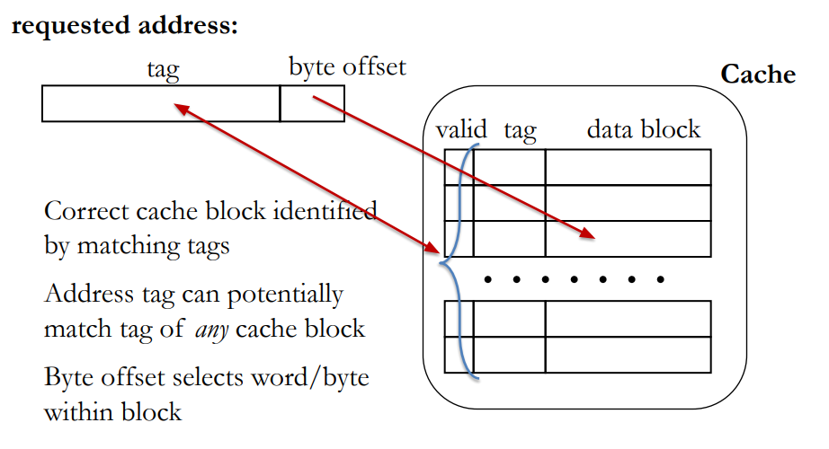
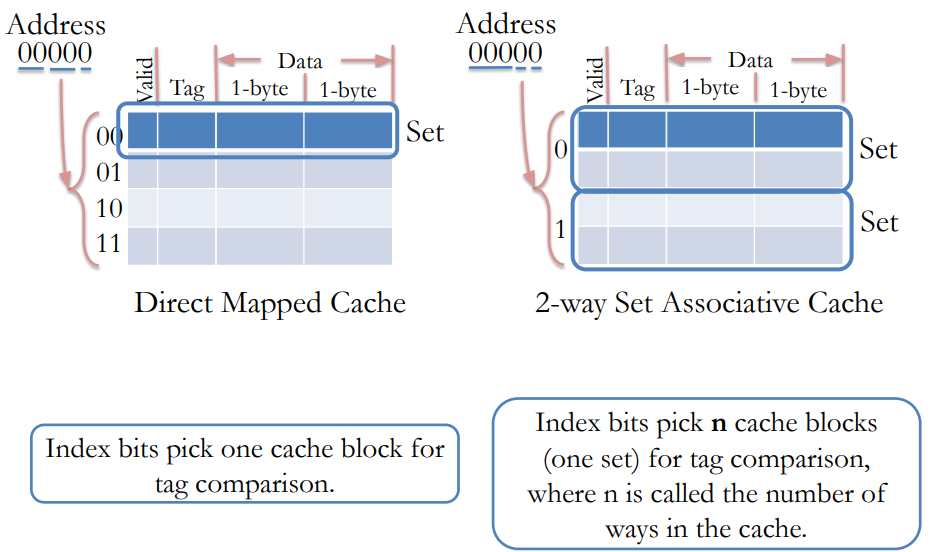
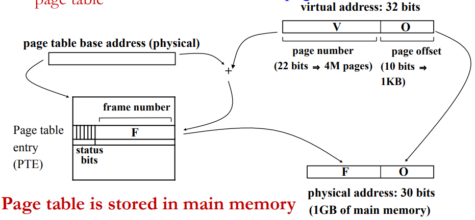
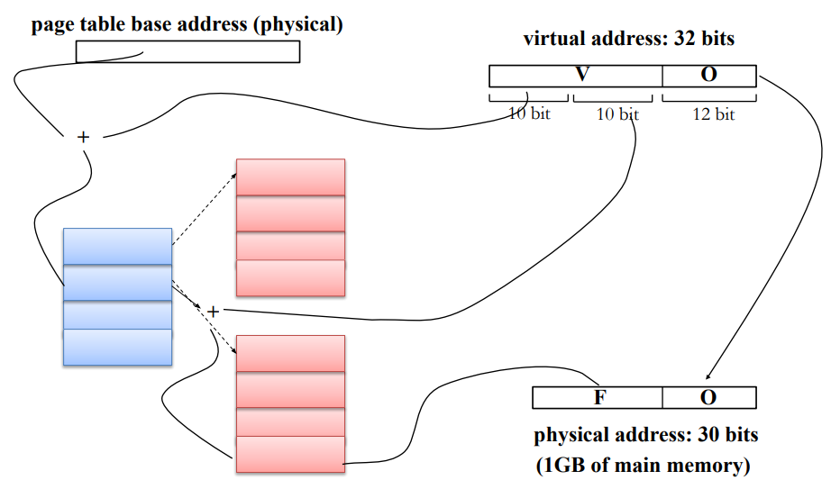
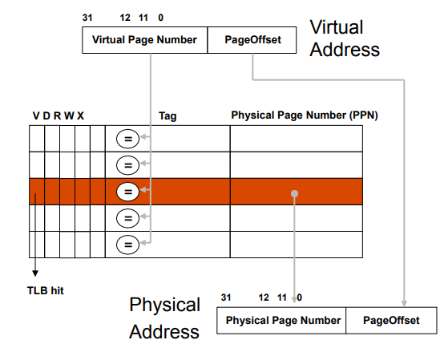
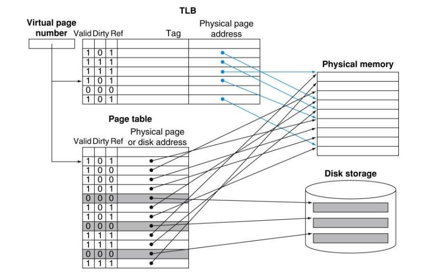

Caches and Virtual Memory
- Chapter 3 (3.5)
Fully Associative Caches
Cache organizations
- Direct mapped
- A block can be placed only by one location in the cache
- Fully associative
- A block can be placed anywhere in the cache
- n-way set associative
- A block can be placed at one of the predetermined n locations in the cache
Problems with Direct Mapped Caches
- An access evicts the data brought in by the previous access
- All accesses compete for the same cache location
- All other locations are empty
Fully Associative Cache Characteristics
- Index bits in Direct Mapped cache become part of tag in Fully Associative cache.

Set Associative Caches
- Problems with other cache organizations:
- In a direct-mapped cache, several addresses might compete for a few cache location while the other locations remain unused, thus lowering cache hit rate.
- In a fully-associative cache, search for matching tags is either very slow, or requires a very expensive memory type called Content Addressable Memory (CAM)
- Set associative cache offer a compromise between direct mapped and fully associative caches.

More cache terminology
- Block (or line): the unit of data stored in the cache
- Typically in the ranges of 32-128 bytes
- Set: A group of blocks
- Way: A block in a set
- Number of ways defines number of blocks in a set
- E.g. a 4-way set associative cache has 4 blocks in each set
- 2 to 32 ways are common
- Fully associative cache: #ways = #blocks
- Caveat: “Index” bits in address do not select a cache block, rather a cache set.
Cache Replacement
- What to do when we run out of cache space
- Need to evict a block to make space for the new one
- Which block to evict?
- The block which is not going to be used soon
- Replacement policies
- Random
- LRU (Least Recently Used)
- FIFO (First In First Out)
- …
Writing to Caches
- When to write the modified data to memory?
- Write-through: While writing to cache
- Write-back: When the block is evicted
Write-through
- Always write to memory
- Write is as slow as write to memory (not cache)
- Pro: Simpler implementation and coherence.
- Con: Slow, bandwidth intensive
Write-back
- Pro: Consolidate multiple writes to the same block, Saves bandwidth and energy
- Con: Need to track dirty (modified) blocks
- Note: the cache and memory are now not the same!
- When we evict a line we need to know if it is different from the DRAM to write it back
- Dirty bit keeps track of whether the cache block has been written. If it is dirty, we need to write it back to DRAM when we evict it.
Cache Performance
AMAT = (hit rate * hit-time) + (miss rate * miss-latency)
Cache hierarchy
Multiple level caches to balance capacity and access latency
- Typically caches at all levels are made of SRAM
- Cache closest to processor is small but fast
- Caches further away from processor are increasingly bigger but slower
- As size of SRAM grows, its access latency also increases
Introduction to Virtual Memory
Motivation
Virtual memory addresses two main issues: Capacity and safety
- Capacity: how to relieve programmers from dealing with limited main memory capacity?
- To allow physical memory to be smaller than the program’s address space (e.g. 32bit 🡪 4GB)
- To allow multiple programs to share limited physical memory
- Safety: how to enable safe and efficient sharing of memory among multiple programs
- To prevent user programs to access memory used by OS
- To control the access by one user program to the memory of other user programs
Virtual Memory idea
- Idea: make each program think that it owns the entire memory.
- Virtual address space: addresses visible to the programmer
- E.g. PC, load/store addresses
- Physical address space: actual main memory addresses
- Addresses used to access cache/ memory
- Address translation
- Virtual address are translated on-the-fly to physical addresses
- The translation is done jointly by hardware and OS
- Parts of virtual address space not used recently is store on disk, not in memory
Address Translation
- Two styles of address translation
- Paging: Basic translation units are fixed size memory regions, called pages.
- Segmentation: Basic translation units are variable size memory regions, called segments.
We will focus on paging as it is used more commonly
Paging
- A cache line or block of virtual memory is called a page
- “page” or “virtual page” for virtual memory
- “page frame” or “physical page” for physical memory
- Typical page sizes are 4-8 KB (MB or GB in servers)
- Large enough for efficient disk use and to keep translation tables (aka page tables) small
- Translation is done through per program page tables
- Different programs can use same virtual address
Page address translation
- Page offsets not translated
- Page number is translated via page table

Practice problem
▪What is the size of the page table given a 32-bit virtual address space, 4 KB physical pages, and 1 GB of main memory? Page offset: 12-bits Virtual page number: 32-12 = 20-bits → 1M page table entries Status bits: 6-bits Physical page number: 30-12 = 18-bits Page table entry size: 18+6 = 24-bits Page table size: 24Mbits = 3MB
Multi Level Page Tables
Problem with one level page tables
▪Page table size: 3MB ▪Each application requires its own page table
- 100 concurrently executing applications would require 300MB for page tables
- 1/3 of physical memory (300MB of 1GB) is used up for page tables only
- Waste of space if an application uses only a fraction of its virtual address space
One level page table reserves space for all possible virtual pages
Multi-level page tables characteristics
▪The last level tables hold the physical page number ▪A table at any other level holds pointer to tables at the next level. ▪Advantage: tables are inserted only if the corresponding part of the address space is in use
Storage cost for two level page table
- Storage per table:
- 3KB (1K entries, 3B/entry)
- Covering full address space
- 1025 table (1 at 1st level, 1024 at 2nd level)
- Storage: 3.003MB (1025*3KB)
- Slightly higher than single level page table
- Covering smaller address space
- 0x00000000 to 0x003FFFFF (4MB)
- Needs only 2 tables (1 at each level)
- Storage: 6KB
- 0x00000000 to 0x7FFFFFFF (2GB)
- Needs 513 tables (512 at 2nd level)
- Storage: 513*3KB = 1.503MB
- 0x00000000 to 0x003FFFFF (4MB)
Page table storage varies with virtual address space actually used
Address translation with 2-level page table

TLB
Fast page table access
- Problem: page table access adds to memory access latency
- Two memory accesses per load/store (for single level page table)
- one to get page table entry, one for actual load/store
- Page table is in main memory, though data may be in cache
- Solution: Translation Lookaside Buffer (TLB)
- TLB is cache (typically fully associative) for page table
- Small fast table located close to processor
- Captures most translations due to principle of locality
- TLB miss: translation not in TLB. Access page table and save the translation in TLB
TLB status bits
- V (valid) bit
- D (dirty) bit indicates whether page has been modified
- R, W, X permission bits. Checked on every memory access

Virtual memory: full picture
